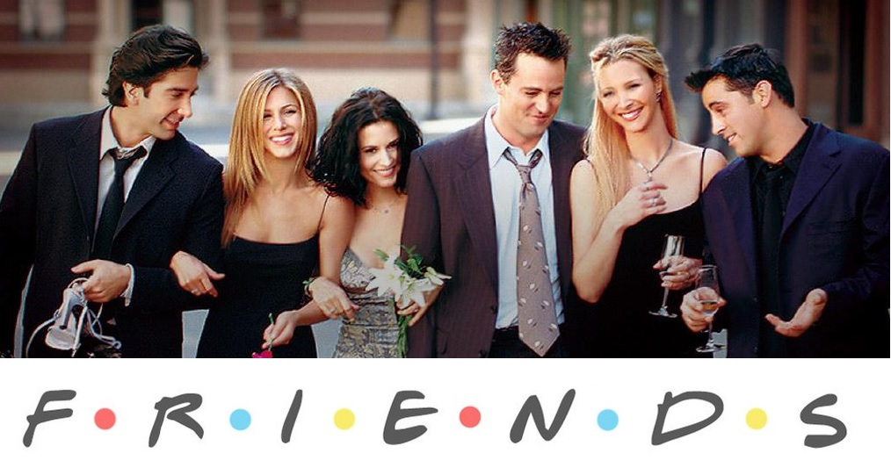

Frindes

Friends is an American sitcom television series, created by David Crane and Marta Kauffman.
The show revolves around six friends in their 20s and 30s who live in Manhattan, New York City.
Best Quotes from the series
- Maybe I don’t need your money. Wait, wait, I said maybe!
- Joey doesn’t share food!
Back to the home page!